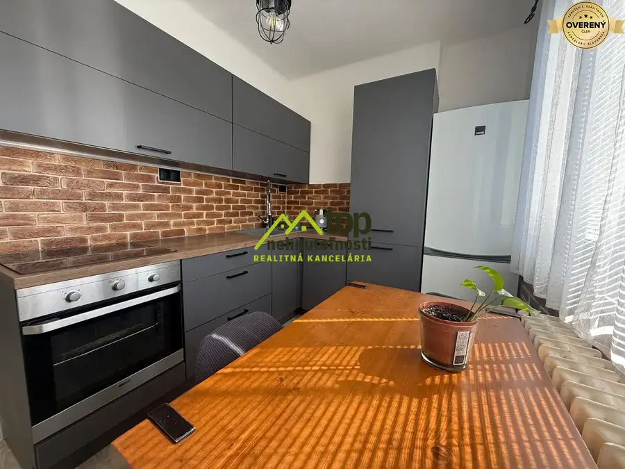
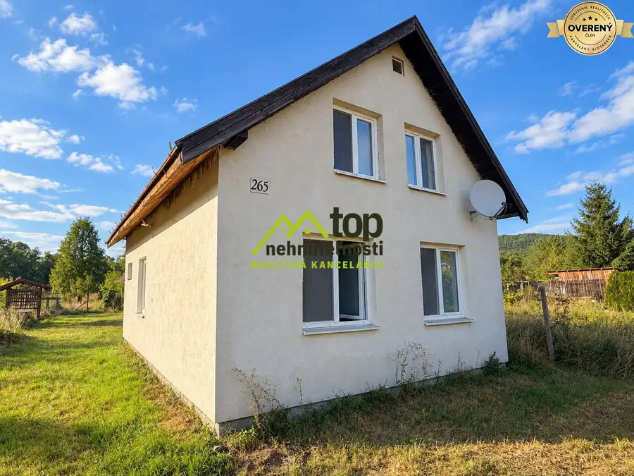

Pokojný 4-izbový dom s veľkým pozemkom v obci Krásno
Krásno
- Dispozícia4-izbový
- Plocha170 m²
- Poschodie0. z 1
- Stavčiastočne prerobený
- Vlastníctvoosobné
O nehnuteľnosti
Realitná kancelária TOPnehnutelnosti.eu Vám predstavuje na predaj jedinečný 4-izbový rodinný dom v peknej obci Krásno, ktorý sa nachádza na konci tichej, slepej ulice. Táto nehnuteľnosť je ideálnou voľbou pre tých, ktorí hľadajú pokojné bývanie v blízkosti prírody, no zároveň s dobrou dostupnosťou do okolitých miest.
Dom je postavený na priestrannom, rovinatom pozemku s celkovou rozlohou 1277 m2, z čoho zastavaná plocha je 200 m2. Pozemok je kompletne oplotený a ponúka dostatok priestoru na relaxáciu, záhradkárčenie či iné aktivity. V záhrade nájdete aj studňu, ktorá je praktickým zdrojom vody pre zavlažovanie.
Samotný dom prešiel čiastočnou rekonštrukciou, ktorá zahŕňa nové rozvody elektriny, vody, plynu a odpadov. Vykurovanie a ohrev vody zabezpečuje plynový kotol. V dome sú plastové okná, ktoré prispievajú k energetickej úspornosti. Strecha bola zrekonštruovaná a pokrytá kvalitnou krytinou BRAMAC.
Interiér domu ponúka štyri izby s možnosťou rozšírenia obytného priestoru do podkrovia. Kúpeľňa je vybavená vaňou, umývadlom a WC. Dom sa predáva čiastočne zariadený, čo umožňuje novým majiteľom prispôsobiť si ho podľa vlastných predstáv.
Na pozemku sa nachádza aj samostatne stojaca garáž, letná kuchyňa a priestor na uskladnenie rôznych vecí za letnou kuchyňou a v podkroví celej stavby. Celý priestor poskytuje ďalšie možnosti využitia a zvyšuje hodnotu nehnuteľnosti.
Lokalita obce Krásno je ideálna pre rodiny s deťmi, keďže v obci sa nachádza materská škola. Výborná dostupnosť do Partizánskeho (7 km) a Topoľčian (13 km) zaručuje, že všetky potrebné služby a vybavenosť sú na dosah.
Táto nehnuteľnosť je skvelou príležitosťou pre mladé rodiny, ale aj pre seniorov, ktorí hľadajú pokojné miesto na život. Momentálne prebieha v obci inštalácia optického internetu, čo zaručuje moderné pripojenie na internet.
Ak hľadáte dom, ktorý kombinuje pohodlie, priestor a pokoj, neváhajte nás kontaktovať pre viac informácií alebo dohodnutie obhliadky. Tento dom môže byť vaším novým domovom, kde nájdete pokoj a pohodu.
Kontakt na makléra:
Ing. Jiří Meloun
Telefónne číslo:
Váš osobný realitný maklér
Zabezpečíme pre Vás kompletný realitný servis na kľúč – rýchlo, spoľahlivo a bez starostí. V prípade záujmu o obhliadku ma neváhajte kontaktovať.
Parametre
| Rozloha pozemku | 1077 m² |
|---|---|
| Zastavaná plocha | 200 m² |
| Celková rozloha | 1277 m² |
| Úžitková plocha | 170 m² |
| Poschodie | prízemie |
| Počet poschodí | 1 |
| Počet izieb | 4 |
| Vlastníctvo | osobné |
| Stav | čiastočne prerobený |
| Odvoz odpadu | áno |
| Voda | studňa a vodovod |
| El. napätie | 230/400V |
| Plyn | áno |
| Kanalizácia | žumpa |
| Internet | lokálny poskytovateľ |
| Kúpeľňa | vaňa |
| Vykurovanie | vlastné - plyn |
| Garáž | áno - 1 auto |
| Parkovanie | áno |
| Inžinierske siete | áno |
| Postavené z | tehla |
| Zariadenie | čiastočne |
| Zateplený objekt | áno |
| Strecha | po rekonštrukcii |
| Krb | predpríprava |
| Energetický certifikát | nie |
| Predzáhradka | áno |
| Okná | plastové |
| Terén | rovina |
| Dátum zverejnenia | 20. 9. 2026 |
Kde to je
Mohlo by Vás zaujímať

Byt8 148 000 €Na predaj 3 izbový byt TOPOĽČANY Topoľčany 3-izbový65 m²4. podlažie Realitná kancelária TOPnehnutelnosti.eu Vám ponúka na predaj príjemný a dispozične skvele riešený 3-izbový byt, ktorý sa nachádza v bezprostrednej…
Rodinné domy10 99 000 €Rodinný dom v Klížskom Hradišti: Pokojné bývanie v prírode Veľký Klíž 3-izbový110 m² Realitná kancelária TOPnehnutelnosti.eu ponúka v srdci nádhernej prírody, v obci Veľký Klíž, časť Klížske Hradište rodinný dom, ktorý čaká na svojho…